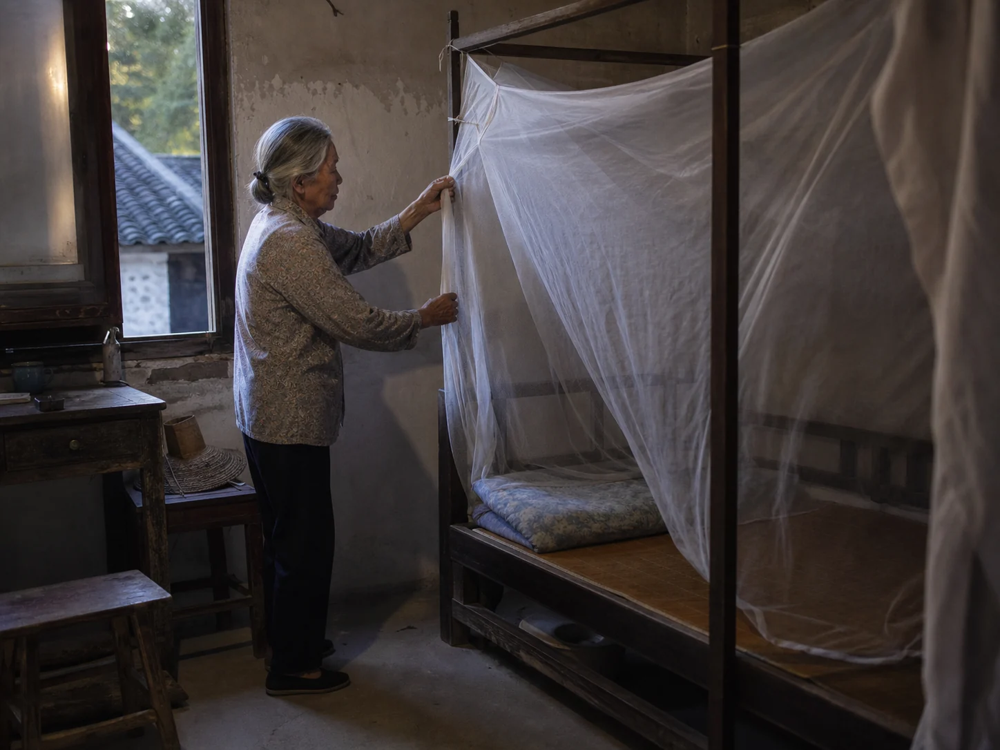

The Mosquito Net Lowered Before Dusk
Before the lamps came on, I watched my grandmother lower the white mosquito net, check its four corners, and tuck it around the summer bed.

Four corners above the bed
The mosquito net spent the day gathered into loose white knots around the bedposts. A narrow cotton strip kept each bundle off the mattress and away from the floor. I could see the dark wood above the mattress and the cords my grandmother had tied at each corner. Until evening, the cloth seemed to belong to the frame rather than the bed.
Before dinner was cleared, she entered the room and untied the first knot. I stood near the window while she shook the thin cloth once, sending a dry whisper across the bamboo mat. The evening air lifted the loose edge against my wrist. She checked the upper seams before letting the net fall.
Lowered before the lamps
My grandmother preferred to finish while the room still held daylight. She walked around the bed, drew the net past the pillow, and pressed its lower edge between the mat and the wooden rail. At the last corner, she ran two fingers along the fold to find any opening.
Bedding airing carried quilts out of the room and opened the bed to sun and moving air; lowering the net brought the sleeping space inward again. The cassia-seed pillow changed one small place beneath the head, while the net drew a light boundary around the whole mattress.
A room inside the room
When the lamp came on, its light softened against the white mesh. I could still see the window, wardrobe, and stool, but their edges looked farther away from inside the net. The mesh made the lamp shade appear grainy, as though I were looking through a fine kitchen sieve. Even our voices seemed smaller when we leaned across the cloth.
My grandmother lifted one side for me and waited until I had placed my book on the stool. She lowered the flap, tucked the final edge beneath the mat, and pulled the wooden stool back from the bedpost.